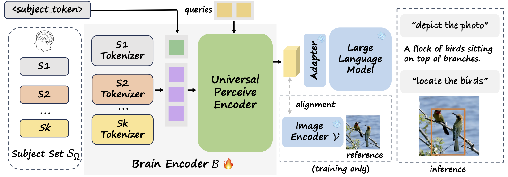

UMBRAE: Unified Multimodal Brain Decoding
Weihao Xia1
Raoul de Charette2
Cengiz Öztireli3
Jing-Hao Xue1
1University College London
2Inria
3University of Cambridge

Multimodal Brain Decoding from our UMBRAE applied on the pretrained MLLMs with given prompts.
[Paper]
[Code]
[BrainHub]
Abstract
We address prevailing challenges in the brain-powered research, departing from the observation that the literature hardly recover accurate spatial information and require subject-specific models. To address these challenges, we propose UMBRAE, a unified multimodal decoding of brain signals. First, to extract instance-level conceptual and spatial details from neural signals, we introduce an efficient universal brain encoder for multimodal-brain alignment and recover object descriptions at multiple levels of granularity from subsequent multimodal large language model (MLLM). Second, we introduce a cross-subject training strategy that maps subject-specific features to a common feature space. This allows a model to be trained on multiple subjects without extra resources, even yielding superior results compared to subject-specific models. We further show that it supports weakly-supervised adaptation to new subjects, with only a fraction of the total training data. Experiments demonstrate that UMBRAE not only achieves superior results in the newly-introduced grounding tasks but also outperforms methods in well established tasks. To assess our method, we construct and share with the community a comprehensive brain understanding benchmark BrainHub.
Keywords: Multimodal Brain Decoding, Efficient Brain Encoder, Cross-Subject Training,
Weakly-Supervised Adaptation,
Large Language Model
Method
UMBRAE decodes multimodal explanations from brain signals. (1) We introduce a universal brain encoder for multimodal-brain alignment and recover conceptual and spatial details by using multimodal large language models. (2) We introduce cross-subject training to overcome unique brain patterns of different individuals. This allows brain signals from multiple subjects to be trained within the same model. (3) Our method supports weakly-supervised subject adaptation, enabling the training of a model for a new subject in a data-efficient manner. (4) For evaluation, we introduce BrainHub, a brain understanding benchmark, based on NSD and COCO.

Overview of UMBRAE.
Our brain encoder includes subject-specific tokenizers and a universal perceive encoder. Brain signals from multiple subjects are mapped into a common feature space, enabling cross-subject training and weakly-supervised subject adaptation. The brain encoder learns to align neural signals with image features. During inference, the learned encoder interacts with MLLMs and performs brain understanding tasks according to given prompts.
Demo Examples
UMBRAE decodes multimodal explanations from brain signals.

Brain Captioning
Brain Captioning aims at textually describing the primary content of a given brain response. Here are the brain captioning comparison (on S1). The Baselines include SDRecon, BrainCap, and OneLLM. UMBRAE-S1 refers to our model trained only with subject S1, while UMBRAE denotes the model with cross-subject training. The left is the reference image.
|
Reference
|
Captioning
|
|
|
| SDRecon | the sea with some trees in the fore, and mountains in the distance are red |
| BrainCap | a person is standing on a beach with a snowboard. |
| OneLLM | A group of people gathered on the beach flying kites. |
| UMBRAE-S1 | A group of people riding boards on top of a beach. |
| UMBRAE | A person is parasailing on a lake with mountains in the distance. |
|
|
|
| SDRecon | the city of london from an perspective |
| BrainCap | a corner of a building with a train station. |
| OneLLM | A kitchen is seen through an open door. |
| UMBRAE-S1 | A large building with a clock tower on top. |
| UMBRAE | A large building with a clock tower on top. |
|
|
|
| SDRecon | some animals in the wild area near to wildlife world |
| BrainCap | a large area of grass. |
| OneLLM | A man standing on a snowy slope skiing. |
| UMBRAE-S1 | A giraffe is standing in a grassy field. |
| UMBRAE | A giraffe is standing in a grassy field. |
|
|
|
| SDRecon | a beach with rocks on the shore and ocean |
| BrainCap | a large body of water with some birds on it. |
| OneLLM | A foggy day in San Francisco with a bus and a streetlamp. |
| UMBRAE-S1 | A group of birds standing on top of a sandy beach. |
| UMBRAE | A flock of birds standing on a body of water. |
|
|
|
| SDRecon | some of the amazingly colorful african animals, the only because its natural habitat is |
| BrainCap | a close up of a person with a ball |
| OneLLM | A black and white sheep standing next to a green bush. |
| UMBRAE-S1 | A small bird is sitting on a tree branch. |
| UMBRAE | A bird is sitting on the branches of a tree. |
|
|
|
| SDRecon | an abandoned house and two of her babies |
| BrainCap | a couple of animals that are in the grass. |
| OneLLM | A group of three sheep standing next to each other. |
| UMBRAE-S1 | Three sheep standing next to each other on a grassy field. |
| UMBRAE | Three sheep standing near each other in a field. |
|
|
|
| SDRecon | a man on a motorcycle riding across the ocean while another man standing on a ramp |
| BrainCap | a group of people on a field with a dog. |
| OneLLM | A man talking on a cell phone while skiing. |
| UMBRAE-S1 | A group of people riding skis on top of a snow covered slope. |
| UMBRAE | A group of people riding skis on top of a snow covered slope. |
|
|
|
| SDRecon | an empty room with couch in it |
| BrainCap | a room with a large window and a sink. |
| OneLLM | A large silver bed sitting in a room. |
| UMBRAE-S1 | A living room filled with furniture and a large window. |
| UMBRAE | A living room filled with furniture and a large window. |
|
Below are the Brain Captioning results on different subjects. “COCO” is the ground truth caption in the COCO dataset. We excerpt the first caption if there are multiple captions for the same image. Shikra-w/img is the result using the ground truth images as input. Results for all four subjects (S1, S2, S5, and S7) are from our cross-subject UMBRAE model.
|
Reference
|
Captioning
|
|
|
| COCO | A bathroom with a vanity mirror sitting above a toilet next to a bathtub. |
| Shikra-w/img | A bathroom with a toilet, sink and a television. |
| S1 | A bathroom with a toilet, sink and mirror. |
| S2 | A bathroom with a sink, mirror and toilet. |
| S5 | A kitchen with a stove, sink, and cabinets |
| S7 | A bathroom with a toilet, sink and bathtub. |
|
|
|
| COCO | A picture of a cat and some luggage. |
| Shikra-w/img | A cat sitting on a suitcase with clothes on a table. |
| S1 | A cat is sitting on top of a closed suitcase. |
| S2 | A cat is laying down on a soft surface. |
| S5 | A cat is laying on top of a bed. |
| S7 | A cat laying on top of a bed in a room. |
|
|
|
| COCO | A large field of grass with sheep grazing on the land. |
| Shikra-w/img | A herd of sheep graze in a lush green field. |
| S1 | A large mountain range filled with lots of trees. |
| S2 | The image shows a great wilderness of mountains. |
| S5 | A large mountain range is shown with a sky in the background. |
| S7 | A large field with a mountain range in the background. |
|
|
|
| COCO | A man riding a snowboard down a hill. |
| Shikra-w/img | A skier is going down a snowy hill. |
| S1 | A person in a ski outfit skiing down a slope. |
| S2 | A man riding a surfboard on top of a wave. |
| S5 | A person on skis is skiing on a snowy slope. |
| S7 | A person riding a snowboard on top of a snow covered slope. |
|
|
|
| COCO | Double decker bus on the street next to buildings. |
| Shikra-w/img | A double decker bus is parked outside a building. |
| S1 | A transit bus riding down a street with buildings around. |
| S2 | A passenger bus that is driving down the street. |
| S5 | A large bus is traveling down the street. |
| S7 | A bus driving down the street near another bus. |
|
|
|
| COCO | A person holding a tennis racket in their hand. |
| Shikra-w/img | A young man in an orange shirt playing tennis. |
| S1 | A woman holding a tennis racquet on top of a tennis court. |
| S2 | A woman holding a tennis racket on a tennis court. |
| S5 | A woman standing on a tennis court holding a racket. |
| S7 | A man holding a tennis racquet on a tennis court. |
|
Brain Grounding
Brain Grounding is the counterpart of visual grounding and seeks to recover spatial locations from brain signals by inferring coordinates. Here are the Brain Grounding results from UMBRAE using different task prompts. Reference images are visual stimuli for input brain responses and are just used here for visualization.

Below are the UMBRAE Brain Grounding results of different subjects.

Brain Retrieval
The forward retrieval (top) is to find the correct image embedding given a brain embedding. Conversely, the backward retrieval (bottom) aims to locate the correct brain embedding given an image embedding.

Visual Decoding
Despite that our method is not specifically designed for the task of visual decoding (fMRI-to-image reconstruction), our predicted textual and visual cues can be used for the final image reconstruction by using a variety of pretrained image generation models. These models include text-to-image
SD,
SD-XL, and
Kandinsky3, a layout-to-image
GLIGEN, and a multiple-condition
Versatile Diffusion.
BrainHub
For evaluation, we introduce BrainHub, a brain understanding benchmark, based on NSD and COCO.
There are 982 test images, 80 classes, 4,913 captions, and 5,829 boundingboxes. For grounding evaluation, we further group the 80 classes of COCO into 4 salience categories according to their salience in images: Salient (S), Salient Creatures (SC), Salient Objects (SO), and Inconspicuous (I).
The illustration shows the statistics and mapping of our categories, w.r.t. COCO classes.

BibTex
@inproceedings{xia2024umbrae,
title={UMBRAE: Unified Multimodal Brain Decoding},
author={Xia, Weihao and de Charette, Raoul and Öztireli, Cengiz and Xue, Jing-Hao},
booktitle={European Conference on Computer Vision (ECCV)},
year={2024}
}
Acknowledgements: The project template is taken from DreamBooth.